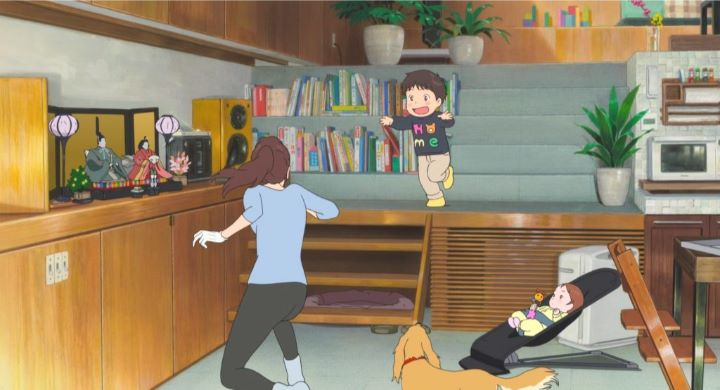

Mamoru Hosoda is unquestionably one of the greatest family-film directors of modern Japanese films, but has also been stuck in a rut for a long time. "Mirai" (titled in Japanese "Mirai no Mirai," translating to "Mirai of the Future") is his 5th major feature film as director, and the 3rd to exclusively tackle themes of family and growing up, something that even his first two films included as a major element. These are good themes, but one can't help but feel if the old saying has become true for Hosoda's movies: "if you've seen one, you've seen them all." Writing this in 2018, it isn't known if this will cap off a trilogy of "family-bonds" films for him; in an interview, he explained he was interested in stories about children growing up and learning through life experiences, and such a broad sentiment could be applied to countless movies for decades to come.If "Wolf Children" was about motherhood and "The Boy and the Beast" was about fatherhood, then "Mirai" is clearly about brotherhood and the sibling dynamic of a young brother and sister. I don't know where a next film might go... maybe Uncles and Aunts? While I was initially worried that "Mirai" would tread the same ground and cause me to be bored, I was pleasently surprised and walked away confidently. "Mirai" is a very good film. The plot is the only thing that brings it down, but not because it's been done before.The opening credits show a series of family photos that brings us to the present day: a young man and woman are starting a family, first with a dog, then a baby boy, and now, a new baby girl, with their tiny house in the middle of subburban Japan growing each time to fill out what little property space they have. Young Kun (about 2 or 3 years old) is initially excited to have a new baby sister, but as his parents become tired and stressed over taking care of baby Mirai, it's clear that they don't have time anymore to give Kun any attention. It's almost like they don't love him anymore! Somehow, Kun has to learn how to accept Mirai and grow up with his new responsibility as a brother...Unlike most of Hosoda's films, this setyp for a story has been told many times already in different mediums. But how it is told here is the interesting part: when Kun has a tantrum, he almost always storms outside to the backyard, a small grass patch with a large old tree in the center. And when he does, the film transforms into a world of Kun's imagination (or possibly, some real magical force at work). Through these adventures, Kun meets different people from his past, present and future: first, it's a human form of Yukko, the family dog, who also felt ignored when baby Kun first appeared. Then it's a teenage version of Mirai, who becomes a guide through a couple other segments. And that's what these are: five or six acts with a clear beginning and end, each time with Kun learning a new life lesson or better accepting his situation.... or does he really learn anything? Like most young children, even when Kun seems to have learned a life-changing lesson, he completely forgets it by the next segment, throwing another fit when his parents can't spend time with him. Kun even admits to being aware of this, but he simply can't control himself. Kun's lack of growth, and the distinct lack of a plot thread that properly ties these acts together, makes the story feel a plot weaker than any of Hosoda's previous films. Even the promotional material clearly had trouble in conveying what the story was about, beyond the image of a young boy and baby girl. But despite the weak story, or because of it, "Mirai" has a simplicity and purity to it that surpasses beyond some of the complicated plots of other films. Kun's mentality is perfectly understandable through the eyes of the camera, and his parents and relatives all feel real, both in happy times as a family and stressful times when trying to keep the household together, often questioning if they are doing things correctly. The movie is surprisingly fun throughout, conveying the hyper imagination of a child in a delightful way and using animation well to convey shocked or horrified facial expressions. However, I would have had a lot more fun if Kun wasn't such a brat, and wasn't often threatening to hit baby Mirai with a hard toy train (the mother's reactions just before stopping him is especially relatable here).  Visually, without as many fantastical story elements to utilize, the movie looks a bit simplier than usual for Studio Chizu, with the biggest praise I can give being how impossibly cute baby Mirai is. The most distinctive visual piece comes in the final act (in a fantasy train station), but its style feels so disjointed to the rest of the movie that it feels like an afterthought, as good as it is. The animation is still a strong point though, for a variety of reasons. Character movement is both exagerrated and subtle at the right times, making the most of animation as a medium. There is a greater use of 3D CGI in this movie than usual, but it's used smartly: since Hosoda's visual style is to use flat colors with no shading, CGI toon shading blends in perfectly, such that even discerning eyes probably couldn't tell that Yukko was computer-generated. The opening and ending shot, an extremem long shot of the city before zooming in to the family house, looks at first like a detailed 2D painting (typical in anime), until the camera zooms closer and uses perpective to make the neighbourhood feel physical, like a 3D space. In a handful of shots, CGI allows for more dynamic camera movements, and for large crowds of people, all of which would be nearly impossible in pure 2D. And again, with Hosoda's style, it looks really good together.The music is as good as it's always been in Hosoda's films, if a little familar. I saw this with the English dub, made possible thanks to GKIDS, and as expected, it is a great effort, making the parents, and even Kun, feel more belivable.I can't help but compare "Mirai" to the previous films director Mamouru Hosoda is responsible for, and compared to them, it is a weaker experience, but only in story. Thanks to clever tracking camera shots and a fun sense of wonder, I feel this is arguably Hosoda's strongest directorial work yet. Certainly, if you were already tired of his themes, this won't change your mind, but if you haven't seen anything he has made yet, you'll be in for a treat. Hosoda is still Japan's greatest family-filmmaker working today, and I'm not tired yet of his style, eagerly looking forward to what he makes next.Update (May 2019): After purchasing a North American Bluray, I did what I normally don't bother to do, and listened a bit to the Japanese dub to compare with the English version. I was surprised; the Japanese voice actor for little Kun sounded far too old (despite being a female actor), almost ruining the film's belivability. On the other hand, I don't listen to real Japanese children, so I can't judge too harshly... even so, I highly recommend the English dub here, which I now apprieciate even more. And it's worth mentioning how far GKIDS went into preparing the Bluray, with over 3 hours of bonus features, all interviews with Mamoru Hosoda, the Japanese cast, and the staff of Studio Chizu, offering incredible insight that can be difficult to find anywhere else. However, when the film was recently nominated for an Academy Award (one of the few anime to ever do so), even more interviews were prepared post-release, so there's no shortage of subtited interviews to find for the dedicated fan.
- "Ani" More reviews can be found at : https://2danicritic.github.io/ Previous review: review_Mind_Game Next review: review_Miss_Kobayashi's_Dragon_Maid